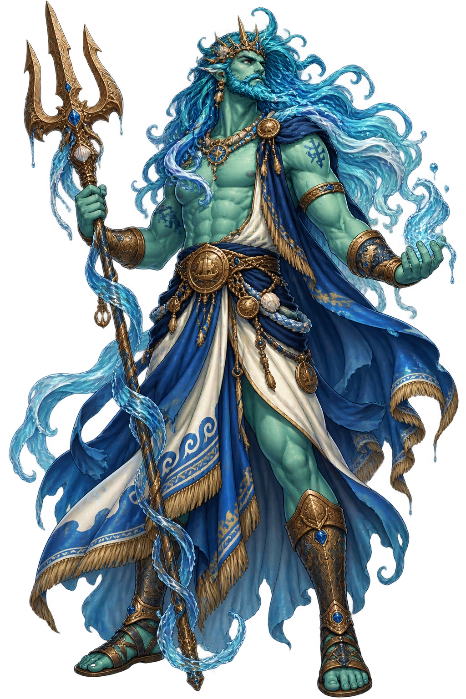
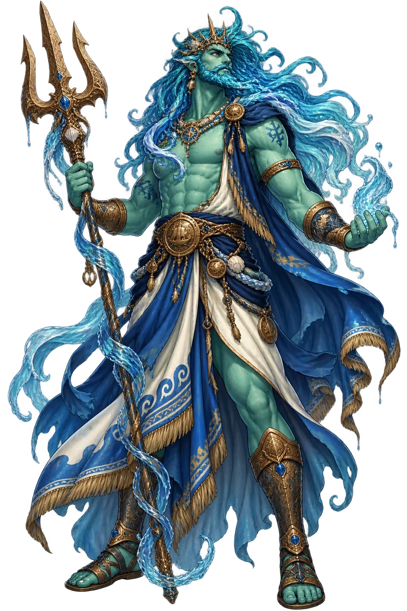

The Cult
No surviving cult of Yammu — he was the defeated one, and defeated gods get no temples. But the Baal Cycle’s ritual setting suggests the combat was re-enacted; and the sea’s own liturgy, the storm on the coast, kept his name in the ear.
Extended Lore
Etymology · Orthography · Cult · Iconography · Reception · Sources

Yammu — every fact links to its home
From original script to canonical restoration — the full etymology page →
The name Yammu reaches the modern world through scholarly transliteration of the phoenician tradition. Because the conventional spelling uses only Latin letters, its canonical and ASCII forms coincide — the tradition it carries is in the name itself, not in diacritics.
Character-by-character philological analysis
| Character | Unicode | Name | Block | Phonetic Role |
|---|---|---|---|---|
| Y | U+0059 | Latin Capital Letter Y | Basic Latin | Same, capitalized |
| a | U+0061 | Latin Small Letter A | Basic Latin | Same |
| m | U+006D | Latin Small Letter M | Basic Latin | Same |
| m | U+006D | Latin Small Letter M | Basic Latin | Same |
| u | U+0075 | Latin Small Letter U | Basic Latin | Same |
This restoration reflects fidelity to the attested tradition, not recovered diacritics: every character of Yammu already survives in ASCII. What the restoration preserves is the canonical spelling itself — the form scholarship standardised.
How the sacred was kept — rites, sanctuaries, remains
No surviving cult of Yammu — he was the defeated one, and defeated gods get no temples. But the Baal Cycle’s ritual setting suggests the combat was re-enacted; and the sea’s own liturgy, the storm on the coast, kept his name in the ear.
Yammu’s monuments are the tablets: the Baal Cycle’s cuneiform pages from Ras Shamrt (Ugarit), 1929 — the oldest large alphabetic texts ever found, and the foundation-stones of Northwest Semitic philology.
How Yammu was imaged across the ages
No image of Yammu survives — the tablets describe, they do not draw. His icon is the divided sea of the Psalms: the waters standing like walls, the combat fossilized into weather.
The name after its own age — transmission, translation, survival
Comparative religion’s sea-combat paradigm runs through him — the Ugaritic telling is the pattern’s Levantine anchor. Biblical studies uses his cycle to read the Psalms’ sea-imagery as polemic; and the history of writing counts his tablets among its most consequential finds.
Yammu is the Canaanite branch of the ancient Near Eastern sea-enemy — Tiamat’s cousin, with the Babylonian goddess-dragon as his nearest kin. The Hebrew tradition suppressed him into a noun but kept his combat; and modern study of the Baal Cycle restored him as the indispensable witness to what Israel’s religion argued with. The Greeks of the coast heard Poseidon in him; the scholars hear the pattern.
The Baal Cycle’s discovery in 1929 rewrote the history of Canaanite and biblical religion — Yammu’s defeat gave the Psalms their sea-imagery’s original. In Ugaritic studies his name heads every syllabus; and the sea-monster pattern he anchors remains the comparative mythologist’s oldest exhibit.
What the written record preserves — and what it does not
Phoenician writes the name 𐤉𐤌 (y-m) — two letters for the whole word, since the Phoenician alphabet records consonants only. The name is the common Northwest Semitic noun 'sea,' personified as the primordial antagonist of Baal; the vocalization Yammu follows the Ugaritic form of the same word. These two letters are attested across the Phoenician world from Byblos to Carthage in inscriptions catalogued as CIS and KAI, though the sea-god's great narrative survives in Ugaritic cuneiform (KTU 1.1–1.2), not in Phoenician proper. What the written record preserves here is the consonantal skeleton — y-m — and a cosmology of storm against sea.
What Yammu means — beyond the dictionary
Yammu: the sea’s own name, restored in plain letters that the fourteenth-century scribes would have recognised. He needs no vowel-marks the tablets did not carry — the plain transliteration IS the restoration, and the skull-split the literature remembers.
Deep-dives into the cult, attestation, reception, and sources of Yammu
No surviving cult of Yammu — he was the defeated one, and defeated gods get no temples. The full cult record →
The record rests on KTU 1.2 (the Baal Cycle, tablets from Ras Shamra), Psalms 74, 89 (the sea-combat echoes), Smith, The Ugaritic Baal Cycle, among 4 cited works. The full source apparatus →
Comparative religion’s sea-combat paradigm runs through him — the Ugaritic telling is the pattern’s Levantine anchor. Reception & transformation →
No image of Yammu survives — the tablets describe, they do not draw. The iconography →
Phoenician writes the name 𐤉𐤌 (y-m) — two letters for the whole word, since the Phoenician alphabet records consonants only. The Original Script note →
The philological foundations of the record
Every claim on this page is grounded in established scholarship. The orthographic restorations follow disciplinary convention. The etymological chain follows the best available reference works. This is not invention — it is resurrection through scholarship.
You have traced the name from its earliest attestation to its canonical restoration. Now return to the myth. The story is where the name lives.
Back to Lore